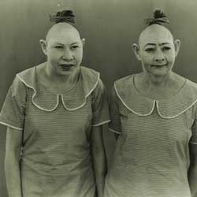

|
| Home | Talent | Cosmetic | Deformity | Abnormal | Ethnological |
Deformities Those with serious phsyical deformities from either accidents or birth defects were typically put in freak shows. Here, we will look at conjoined twins, the elephant man, the libless, the man with two faces, and the pony boy as examples of those who have serious deformities and were placed in Freak Shows because of it. This section will explore the stories behind conjoined or siameese twins, a man with two faces, libless freaks, the pony boy, and the notorious elephant man. Thankfully, today those with serious deformities like this do not have to go through the attention and ridicule that these people faced in the Freak Show Era. |